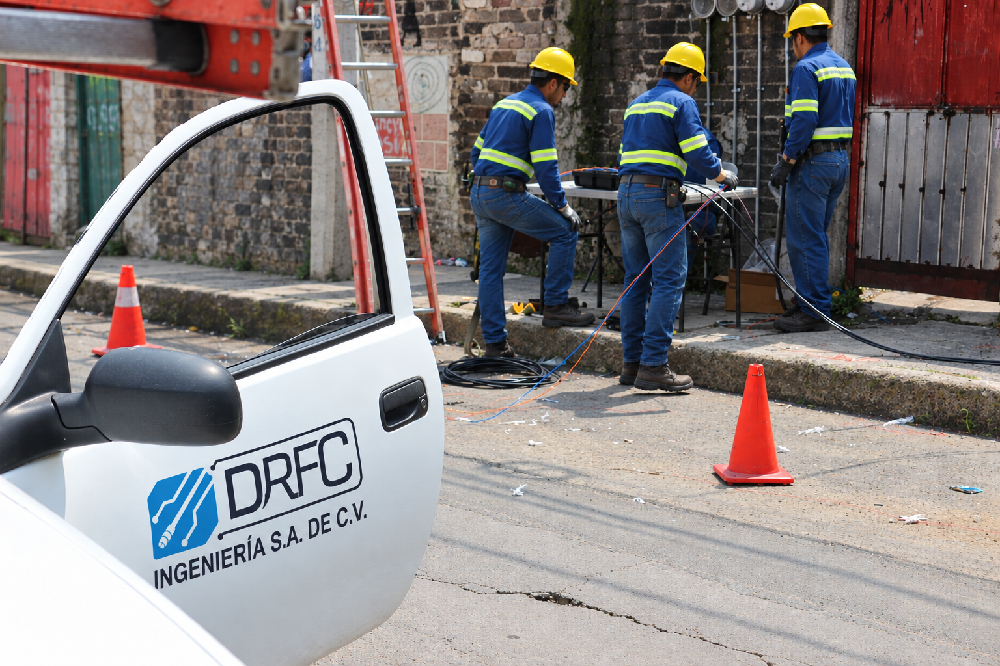

 Proyectos DRFC
Proyectos DRFC
Conectamos a México, proyecto a proyecto.
Conoce las regiones y ciudades donde nuestra experiencia en infraestructura de telecomunicaciones se convierte en resultados.
Compromiso en cada proyecto
Presencia operativa en distintas regiones de la República Mexicana.
0Ciudades
0Estados